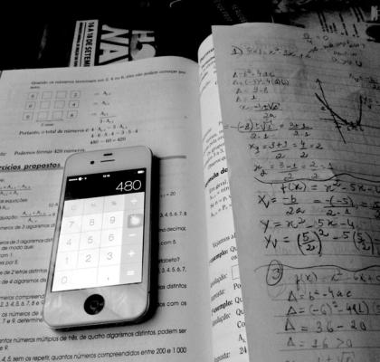
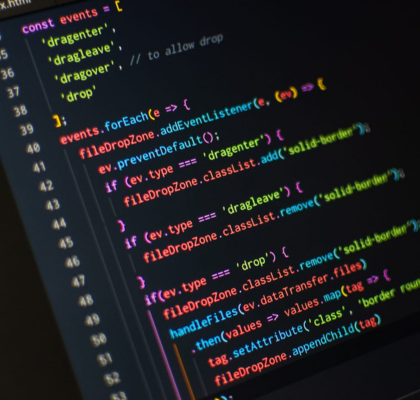
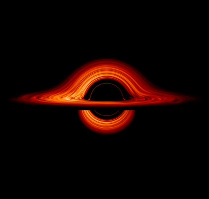
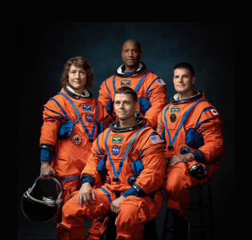
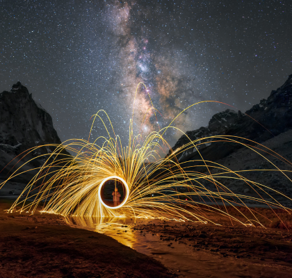

Things I'm Interested In
Learning
This is a constant adventure for me because I love exploring how everything connects. From the intricate mechanics of 3D animation and programming to the massive scale of physics and planetary science, I enjoy diving into how systems function. This curiosity drives me to keep uncovering the secrets of the universe through every new subject I study.

Reading
Reading is my personal gateway to worlds beyond my own, offering a sanctuary of focus in a distracted age. It allows me to travel through time and space, exploring the deepest thoughts of others from the comfort of home. By turning each page, I expand my perspective and discover new ideas that challenge how I see the universe.
Computer Science
Creating my first website at fourteen was the spark that ignited my lifelong passion for computer science. Building a digital space to showcase the characters from my fantasy book showed me how programming transforms imagination into reality. That experience of blending logic with creativity inspired me to pursue technology, as I realized how systems can build entire worlds.

The Space
Watching a rocket pierce the sky is a powerful testament to our courage and precision, turning complex physics into a path toward the stars. I love how the James Webb Space Telescope comfirm this, riding a pillar of fire to capture light from the first galaxies. Each successful launch bridges the gap between theoretical math and our future among the constellations.

Artemis II
It is the first crewed mission of NASA's Artemis lunar program. It will carry four astronauts farther from Earth and closer to the Moon than any human being in more than half a century. On the journey to the Moon and back, the Orion capsule will fly by the far side of the Moon.

Sci-Fi
I am fascinated by science fiction and world mysteries because they blend complex physics with profound existential questions. Works like The Three-Body Problem and Dark captivate me by exploring how the universe functions at its deepest levels. I truly enjoy diving into intricate concepts, such as Schrödinger’s cat, to better understand the hidden mechanics governing our reality.
